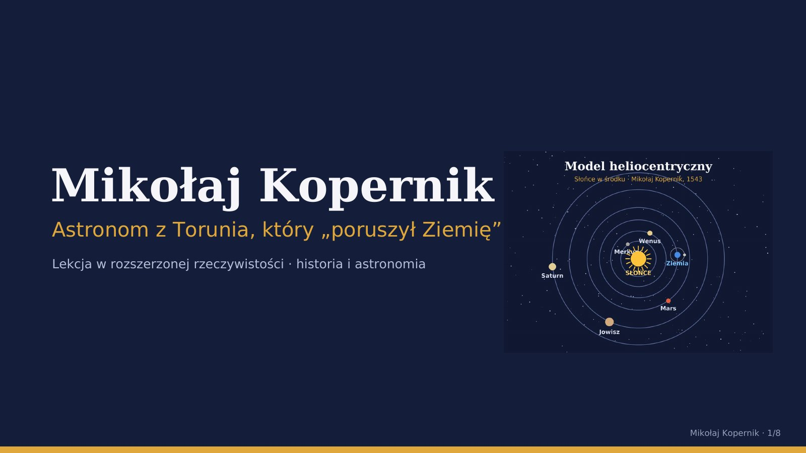
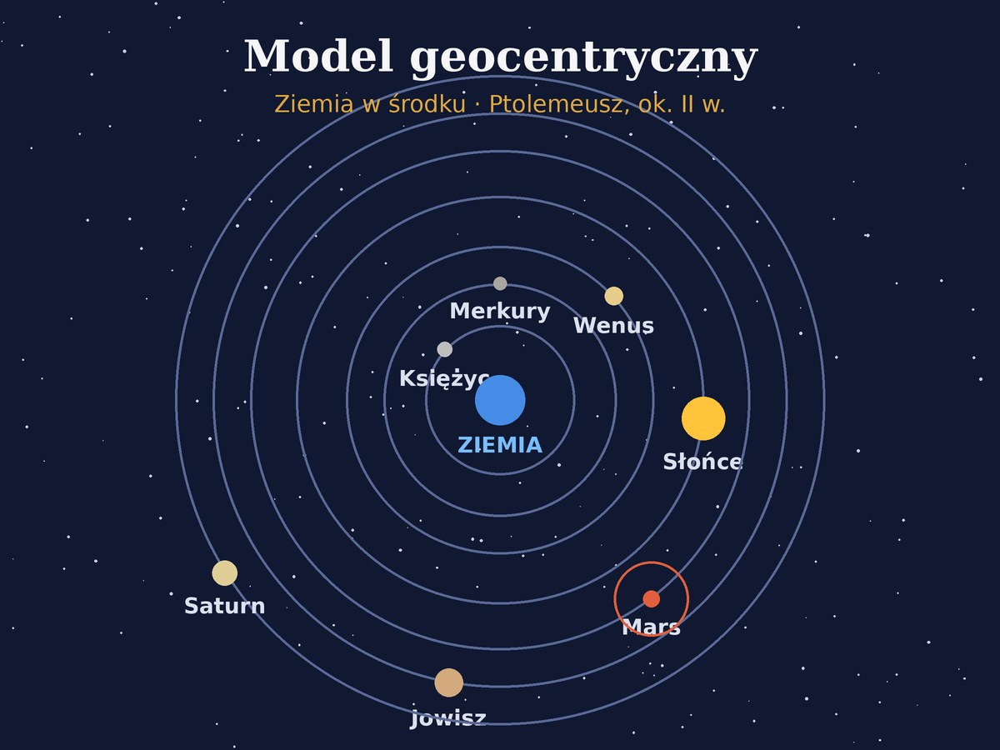
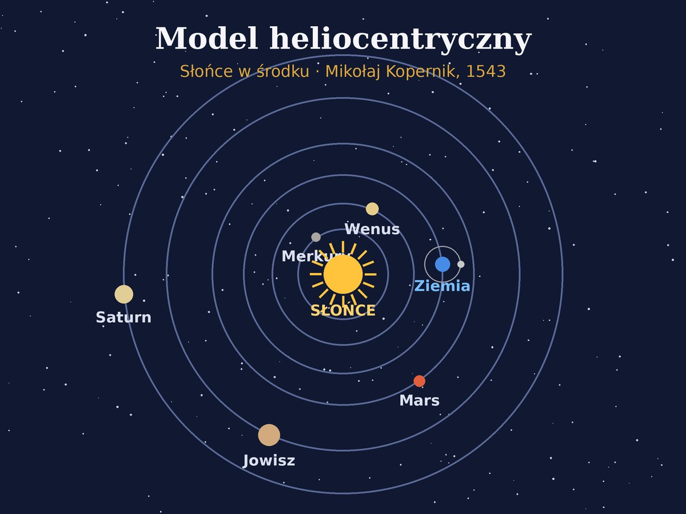
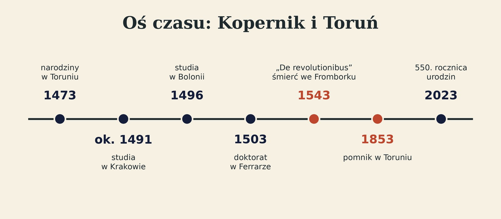

← Panel nauczyciela
Pliki lekcji pokazowej: Mikołaj Kopernik
Pobierz pliki na komputer, a potem w panelu nauczyciela utwórz nową lekcję i przeciągnij je do pola „Materiały”.
Tak pokażesz cały proces: wgrywanie → PDF zamienia się w slajdy → ✨ Zaplanuj z AI albo ⚡ Ułóż automatycznie.

kopernik-slajdy.pdf
8 slajdów (jak prezentacja z PowerPointa zapisana do PDF)
⬇ Pobierzziemia-czy-slonce.mp4
Film 36 s: model geocentryczny vs heliocentryczny i ruch wsteczny Marsa
⬇ Pobierz🪐planetarium-kopernika.glb
Model 3D: mechaniczne planetarium, planety krążą wokół Słońca (animacja)
⬇ Pobierz
🌐sfera-armilarna.glb
Model 3D: sfera armilarna, którą Kopernik trzyma na toruńskim pomniku (animacja)
⬇ Pobierz

model-geocentryczny.jpg
Schemat
⬇ Pobierz
model-heliocentryczny.jpg
Schemat
⬇ Pobierz
os-czasu.jpg
Oś czasu: Kopernik i Toruń
⬇ Pobierz
Źródła faktów: torun.pl (pomnik i biografia Kopernika), Archiwum PAN, materiały Uniwersytetu Łódzkiego.
Modele, film, schematy i slajdy wygenerowano na potrzeby lekcji; ruch planet pokazano w umownej skali i tempie.